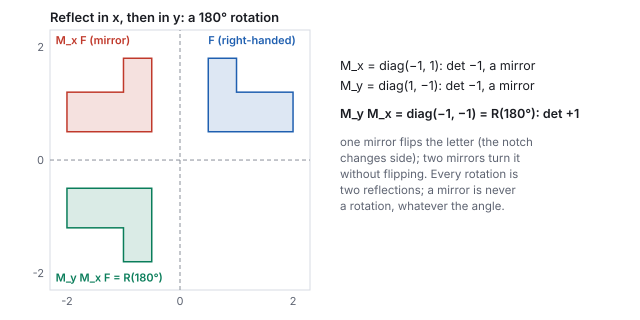
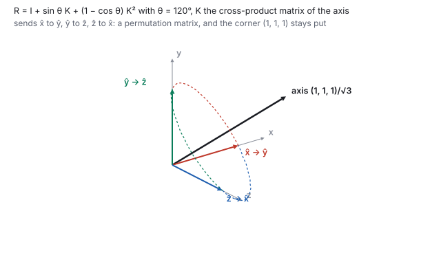
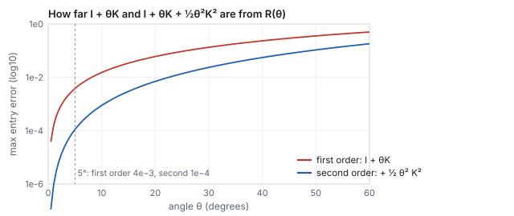

This chapter links to the course’s interactive demos and uses MathJax for its formulas. Read it through the course website (or download the file and open it in a browser); a Canvas inline preview will reach neither the demos nor the math. All chapters.
Rotation: Axis-Angle, Quaternions, Euler Angles
A rotation keeps lengths and angles and fixes the origin, which makes it the best-behaved transform in graphics and, at the same time, the hardest to store well. A matrix applies it fast but drifts and cannot be blended; an axis and an angle say what it is; a quaternion stores it in four numbers that compose by multiplication and blend along a sphere; three Euler angles read nicely and lock. This chapter builds the four in that order, proves what a rotation matrix must satisfy and checks it numerically, derives Rodrigues’ formula from the projection split of the vectors chapter and then writes it as a matrix, recovers an axis and angle from a matrix, converts a quaternion to a matrix and back, verifies the quaternion sandwich on a point by hand, extracts Euler angles from a matrix and watches the extraction fail at the lock, and measures the drift with real single-precision arithmetic. One axis and angle, \((0, 1, 0)\) at \(30^\circ\), runs through the worked examples and the live demo.
1 · What a rotation preserves
Because a rotation is linear and fixes the origin, it is completely determined by where it sends the three basis vectors. That one fact makes rotation matrices readable, which is the next section.
1.1 The three properties, and why they follow from one
1.2 Reflections, and why two of them are a rotation

2 · The rotation matrix: columns are where the axes land
In two dimensions, a point at radius \(r\) and angle \(\varphi\) is \((r\cos\varphi, r\sin\varphi)\); rotating it by \(\theta\) gives \((r\cos(\varphi + \theta), r\sin(\varphi + \theta))\). Expand with the angle-addition formulas and regroup in terms of \(x = r\cos\varphi\), \(y = r\sin\varphi\):
\[ \begin{pmatrix} x' \\ y' \end{pmatrix} = \begin{pmatrix} \cos\theta & -\sin\theta \\ \sin\theta & \cos\theta \end{pmatrix} \begin{pmatrix} x \\ y \end{pmatrix}. \]
Rotation about the \(y\) axis leaves \(y\) alone and spins the \(x\)–\(z\) plane, so the 2D block drops into the \(x, z\) slots:
\[ R_y(\theta) = \begin{pmatrix} \cos\theta & 0 & \sin\theta \\ 0 & 1 & 0 \\ -\sin\theta & 0 & \cos\theta \end{pmatrix}, \qquad R_y(30^\circ) = \begin{pmatrix} 0.866 & 0 & 0.5 \\ 0 & 1 & 0 \\ -0.5 & 0 & 0.866 \end{pmatrix}. \]Watch the sign pattern: for \(R_y\) the \(+\sin\) sits top-right, the opposite of the textbook \(R_z\), because in a right-handed frame with \(y\) up, a positive turn tips the \(x\) axis toward \(-z\). Column 0 says so: \((\cos\theta, 0, -\sin\theta)\). The three axis rotations for reference, all counter-clockwise when looking down the axis toward the origin:
\[ R_x(\theta) = \begin{pmatrix} 1 & 0 & 0 \\ 0 & \cos\theta & -\sin\theta \\ 0 & \sin\theta & \cos\theta \end{pmatrix}, \quad R_z(\theta) = \begin{pmatrix} \cos\theta & -\sin\theta & 0 \\ \sin\theta & \cos\theta & 0 \\ 0 & 0 & 1 \end{pmatrix}. \]
3 · Axis-angle: Rodrigues’ formula
A rotation can be about any unit axis \(\hat{\mathbf{n}}\) by any angle \(\theta\). That pair is the most human representation (“turn 40 degrees about this stick”), and applying it to a vector needs only the projection split and one cross product.
- Split \(\mathbf{v}\) into the part along the axis, which a rotation about that axis cannot move, and the part across it: \(\mathbf{v}_\parallel = (\mathbf{v}\cdot\hat{\mathbf{n}})\hat{\mathbf{n}}\), \(\mathbf{v}_\perp = \mathbf{v} - \mathbf{v}_\parallel\).
- Build the second axis of the rotation plane: \(\mathbf{w} = \hat{\mathbf{n}}\times\mathbf{v}\) is perpendicular to both \(\hat{\mathbf{n}}\) and \(\mathbf{v}_\perp\) and has the same length as \(\mathbf{v}_\perp\), since \(\|\hat{\mathbf{n}}\times\mathbf{v}\| = \|\mathbf{v}\|\sin\angle(\hat{\mathbf{n}},\mathbf{v}) = \|\mathbf{v}_\perp\|\).
- Turn inside the plane, a 2D rotation with \(\mathbf{v}_\perp\) and \(\mathbf{w}\) as the two axes: \(\mathbf{v}_\perp' = \cos\theta\,\mathbf{v}_\perp + \sin\theta\,\mathbf{w}\).
- Add the frozen part back and substitute.

| basis vector | \(\mathbf{v}\cdot\hat{\mathbf{n}}\) | \(\hat{\mathbf{n}}\times\mathbf{v}\) | \(\mathbf{v}'\) |
|---|---|---|---|
| \(\hat{\mathbf{x}} = (1,0,0)\) | 0 | \((0, 0, -1)\) | \(0.866\,(1,0,0) + 0.5\,(0,0,-1) = (0.866, 0, -0.5)\) |
| \(\hat{\mathbf{y}} = (0,1,0)\) | 1 | \((0,0,0)\) | \((0, 1, 0)\), unchanged |
| \(\hat{\mathbf{z}} = (0,0,1)\) | 0 | \((1, 0, 0)\) | \(0.866\,(0,0,1) + 0.5\,(1,0,0) = (0.5, 0, 0.866)\) |
3.1 Rodrigues as a matrix
The cross product with a fixed vector is a linear map, so it has a matrix. For a unit axis \(\hat{\mathbf{n}} = (n_x, n_y, n_z)\), \[ K = \begin{pmatrix} 0 & -n_z & n_y \\ n_z & 0 & -n_x \\ -n_y & n_x & 0 \end{pmatrix}, \qquad K\mathbf{v} = \hat{\mathbf{n}}\times\mathbf{v}, \] and \(K\) is skew-symmetric, \(K^{\mathsf T} = -K\). Two applications give \(K^2\mathbf{v} = \hat{\mathbf{n}}\times(\hat{\mathbf{n}}\times\mathbf{v}) = (\mathbf{v}\cdot\hat{\mathbf{n}})\hat{\mathbf{n}} - \mathbf{v}\), which is minus the perpendicular part of \(\mathbf{v}\). Substituting both into Rodrigues’ formula turns it into a matrix identity:
axisAngleMatrix evaluates. Set \(\hat{\mathbf{n}} = \hat{\mathbf{y}}\) and the three \(R_y\) entries of Section 2 fall out of \(K\) and \(K^2\).

3.2 The log map: axis and angle from a matrix
The formula also runs backward. The trace of \(R\) is \(3 + 0 + (1 - \cos\theta)\,\mathrm{tr}(K^2)\), and \(\mathrm{tr}(K^2) = -2\) for a unit axis, so \(\mathrm{tr}\,R = 1 + 2\cos\theta\). The symmetric part of \(R\) is \(I + (1 - \cos\theta)K^2\) and the antisymmetric part is \(\sin\theta\,K\), from which the axis can be read entry by entry:
3.3 Small angles, and the angular velocity
For small \(\theta\), \(\sin\theta\approx\theta\) and \(1 - \cos\theta\approx\theta^2/2\), so \(R \approx I + \theta K + \tfrac12\theta^2K^2\), and to first order \(R\mathbf{v}\approx\mathbf{v} + \theta\,\hat{\mathbf{n}}\times\mathbf{v}\). That is the physics of spinning: a body turning about \(\hat{\mathbf{n}}\) at rate \(\omega\) has angular velocity \(\boldsymbol\omega = \omega\hat{\mathbf{n}}\), and a point at \(\mathbf{p}\) on it moves with velocity \(\boldsymbol\omega\times\mathbf{p}\). The exact rotation is the limit of many small ones, \(R = \exp(\theta K)\), the matrix exponential, which is why the axis-angle vector \(\theta\hat{\mathbf{n}}\) is called the exponential coordinate of a rotation and Section 3.2 its logarithm.

4 · Quaternions
Why not store the matrix? Nine numbers with six hidden constraints, for three degrees of freedom. Composing matrices in floating point erodes the constraints and shapes begin to shear (Section 7 measures it); averaging two rotation matrices is not a rotation, so orientations cannot be blended. A quaternion has four numbers, one constraint, composes by multiplication, and blends along a sphere.
The half angle is the one surprise. It comes from how a quaternion rotates a point: by a sandwich, \(p' = q\,p\,q^{-1}\), which applies the half-turn twice. Expanded into vector operations (with \(\mathbf{q}_v = (x, y, z)\)) the sandwich needs no trigonometry at all:
\[ \mathbf{p}' \;=\; \mathbf{p} \;+\; 2w\,(\mathbf{q}_v\times\mathbf{p}) \;+\; 2\,\mathbf{q}_v\times(\mathbf{q}_v\times\mathbf{p}) . \]| \(\mathbf{q}_v\times\mathbf{p}\) | \((0, 0.707, 0)\times(1, 0, 0) = (0.707\cdot0 - 0,\; 0 - 0,\; 0 - 0.707\cdot1) = (0, 0, -0.707)\) |
| \(2w\,(\mathbf{q}_v\times\mathbf{p})\) | \(1.414\,(0, 0, -0.707) = (0, 0, -1)\) |
| \(\mathbf{q}_v\times(\mathbf{q}_v\times\mathbf{p})\) | \((0, 0.707, 0)\times(0, 0, -0.707) = (0.707\cdot(-0.707) - 0,\; 0,\; 0) = (-0.5, 0, 0)\) |
| \(2\,\mathbf{q}_v\times(\cdots)\) | \((-1, 0, 0)\) |
| sum | \((1,0,0) + (0,0,-1) + (-1,0,0) = (0, 0, -1)\) |
4.1 Quaternion to matrix, and matrix to quaternion
Apply the sandwich to the three basis vectors and the columns of the matrix come out as polynomials in the four components. That is how an engine turns the stored quaternion into the matrix the GPU needs, every frame, with no trigonometry:
4.2 The double cover
\(q\) and \(-q\) give the same matrix: every term of \(R(q)\) is a product of two components, and both signs cancel. So \((0, -0.259, 0, -0.966)\) is also \(R_y(30^\circ)\); it is the quaternion of \(R_y(390^\circ)\), a full extra turn, and \(\sin 195^\circ, \cos 195^\circ\) are exactly those numbers. Every rotation has two quaternions, antipodal on the unit sphere. This matters in exactly one place, interpolation: the arc from \(q_1\) to \(q_2\) and the arc from \(q_1\) to \(-q_2\) reach the same orientation, but one is short and the other goes the long way round. Section 5 tests the sign of \(q_1\cdot q_2\) for that reason.
5 · Composition and interpolation
Do rotation \(q_1\), then \(q_2\): multiply, \(q = q_2\,q_1\), with the one nearest the point applied first, the same right-to-left reading as matrices. The product is
\[ (q_1 q_2)_x = x_1 w_2 + y_1 z_2 - z_1 y_2 + w_1 x_2,\quad (q_1 q_2)_y = -x_1 z_2 + y_1 w_2 + z_1 x_2 + w_1 y_2,\quad (q_1 q_2)_z = x_1 y_2 - y_1 x_2 + z_1 w_2 + w_1 z_2,\quad (q_1 q_2)_w = -x_1 x_2 - y_1 y_2 - z_1 z_2 + w_1 w_2, \]sixteen multiplies against a 3×3 product’s twenty-seven, and the result stays a rotation after a single renormalization. In vector form the same product is \(\mathbf{q}_v = w_1\mathbf{q}_{2v} + w_2\mathbf{q}_{1v} + \mathbf{q}_{1v}\times\mathbf{q}_{2v}\), \(w = w_1 w_2 - \mathbf{q}_{1v}\cdot\mathbf{q}_{2v}\): a cross product sits inside it, which is why it is not commutative, exactly as rotations are not. Pitch then yaw is not yaw then pitch.
Blending. To ease a camera from orientation \(q_1\) to \(q_2\), walk the short arc between them on the unit sphere at constant angular speed (slerp, spherical linear interpolation). A straight-line blend leaves the sphere: halfway between two orientations \(120^\circ\) apart, the average quaternion has length \(0.5\), and renormalizing it gives a rotation that moves fast in the middle and slow at the ends.

(If \(q_1\cdot q_2 < 0\), negate one of them first: \(q\) and \(-q\) are the same rotation, and the short arc is the one between the nearer pair. For the pair below, using \(-q_2\) would give \(\cos\Omega = -0.5\), \(\Omega = 120^\circ\), and a swing of \(240^\circ\) the other way round.) Stepping an animation by composing the same small quaternion each frame is a discretized slerp; it is how a turntable, a door, or an orbiting camera is animated without ever touching a matrix, and the animation chapter measures slerp against the normalized-lerp shortcut.
6 · Euler angles and gimbal lock
The human way to say an orientation: three rotations about three axes, in a fixed order.
Unity’s Quaternion.Euler(x, y, z) applies \(Z\) first, then \(X\), then
\(Y\), so the world-space product is \(R_y\,R_x\,R_z\). Three readable numbers, “pitch 20,
yaw 45, roll 0”, but the order is a convention, and different tools pick different
ones, which is the usual cause of an imported model arriving rotated wrong.
6.1 Conventions
Twelve orders are possible (six with three distinct axes, six that repeat the first), each read either intrinsically (each rotation about the body’s own, already-rotated axis) or extrinsically (each about a fixed world axis). The two readings are the same product written in opposite order: intrinsic \(X\), then \(Y\), then \(Z\) is the matrix \(R_x R_y R_z\), which is also extrinsic \(Z\), then \(Y\), then \(X\). A library’s name for its order does not say which reading it means; the matrix does.
| system | order name | matrix on a column vector | reads as |
|---|---|---|---|
| Unity | ZXY | \(R_y\,R_x\,R_z\) | \(Z\) first about the body, then \(X\), then \(Y\) |
three.js default, and the library’s makeTRS | XYZ | \(R_x\,R_y\,R_z\) | \(Z\) first, then \(Y\), then \(X\) |
| aerospace (yaw, pitch, roll) | ZYX | \(R_z\,R_y\,R_x\) | roll about \(x\) first, pitch, then yaw |
makeTRS(0,0,0, 20,45,10, 1,1,1), three.js order, at \((0.696, 0.401, -0.595)\); the
aerospace order at \((0.696, 0.123, -0.707)\). The Unity and three.js orientations differ by a
rotation of \(15.2^\circ\) (the angle of \(R_1^{\mathsf T}R_2\), by the log map of Section 3.2), the
Unity and aerospace ones by \(8.2^\circ\). Same three numbers, three poses.

6.2 Extracting Euler angles from a matrix
Multiplying out \(R_y(y)\,R_x(x)\,R_z(z)\) puts single trigonometric factors in three places: the entry \((1, 2)\) is \(-\sin x\), the entries \((0, 2)\) and \((2, 2)\) are \(\sin y\cos x\) and \(\cos y\cos x\), and the entries \((1, 0)\) and \((1, 1)\) are \(\cos x\sin z\) and \(\cos x\cos z\). So
\[ x = \arcsin(-R_{12}), \qquad y = \mathrm{atan2}(R_{02}, R_{22}), \qquad z = \mathrm{atan2}(R_{10}, R_{11}), \]and the extraction is exact as long as \(\cos x \ne 0\).
Even away from the lock, a matrix has two Euler triples: \((20^\circ, 45^\circ, 10^\circ)\) and \((160^\circ, 225^\circ, 190^\circ)\) produce the same matrix, since \(x\mapsto180^\circ - x\) with \(180^\circ\) added to the other two is the same orientation. The extraction above always returns the one with \(x\in[-90^\circ, 90^\circ]\).
Nothing is wrong with the orientation at pitch \(90^\circ\); the object is fine. It is the
chart \((\text{yaw}, \text{pitch}, \text{roll})\) that goes singular there, the way longitude
is undefined at the poles. A quaternion names an axis and an angle with no nested frames,
so there is no configuration where two of its parts align. That is the engineering reason
engines store the quaternion and show Euler angles only for editing:
transform.rotation is a quaternion under the hood, always.
7 · Drift, measured
The claim “matrices drift” can be measured. Compose the same \(1^\circ\) rotation 200,000 times in single-precision arithmetic three ways: as a \(3\times3\) matrix product, as a quaternion product, and as a quaternion product renormalized after every step.

The matrix needs six constraints re-imposed (a full re-orthonormalization, which is the Gram–Schmidt of the vectors chapter applied to its columns); the quaternion needs one (divide by its length), and that is cheap enough to do every frame. A game running at 60 frames per second accumulates 200,000 compositions in under an hour.
8 · Choosing a representation
| matrix \(3\times3\) | axis-angle | quaternion | Euler angles | |
|---|---|---|---|---|
| numbers stored | 9 | 4 (or 3, as \(\theta\hat{\mathbf{n}}\)) | 4 | 3 |
| constraints | 6 | 1 (unit axis) | 1 (unit length) | 0 |
| apply to a point | 9 multiplies | via Rodrigues, about 20 | via the sandwich, about 20; or convert once | convert first |
| compose | 27 multiplies | convert first | 16 multiplies | convert first |
| invert | transpose | negate \(\theta\) | conjugate | negate and reverse the order |
| interpolate | no | awkward | slerp | badly (Section 6, and the animation chapter) |
| singularities | none | axis undefined at \(\theta = 0\) | none (a double cover) | gimbal lock |
| drift under composition | shears | none stored | length only, one divide fixes it | none stored |
| readable by a person | columns are axes | yes | no | yes |
The practice that follows from the table: store and interpolate a quaternion, compose quaternions, convert to a matrix once per frame for the GPU, show Euler angles in the inspector, and use axis-angle when the physics hands you an angular velocity. Every conversion in that pipeline is in this chapter.
9 · In code
css551/ directory. The library stores matrices column-major
as 16-element arrays (the affine chapter
explains the layout), so the first four printed numbers are column 0.
- The matrix and quaternion of the chapter’s rotation:
node -e "import('./lib/core/xform.js').then(x=>{const R=x.axisAngleMatrix(0,1,0,30);console.log(R.map(v=>+v.toFixed(3)));console.log(x.quatFromAxisAngle(0,1,0,30).map(v=>+v.toFixed(3)));})" [ 0.866, 0, -0.5, 0, 0, 1, 0, 0, 0.5, 0, 0.866, 0, 0, 0, 0, 1 ] [ 0, 0.259, 0, 0.966 ] - Orthonormal columns: column 0 dotted with itself and with column 2 (Section 1.1):
node -e "import('./lib/core/xform.js').then(x=>{const R=x.axisAngleMatrix(0,1,0,30);const c0=[R[0],R[1],R[2]],c2=[R[8],R[9],R[10]];console.log(x.dot(c0,c0).toFixed(6), x.dot(c0,c2).toFixed(6));})" 1.000000 0.000000 - The diagonal axis permutes the basis and fixes the cube’s corner (Section 3.1):
node -e "import('./lib/core/xform.js').then(x=>{const R=x.axisAngleMatrix(1,1,1,120);console.log(x.applyMat4(R,[1,0,0]).slice(0,3).map(v=>+v.toFixed(3)), x.applyMat4(R,[1,1,1]).slice(0,3).map(v=>+v.toFixed(3)));})" [ 0, 1, -0 ] [ 1, 1, 1 ] - The angle of the composite \(R_x(30^\circ)R_y(30^\circ)\) from its trace (Section 3.2):
node -e "import('./lib/core/xform.js').then(x=>{const M=x.matMul(x.axisAngleMatrix(1,0,0,30),x.axisAngleMatrix(0,1,0,30));const tr=M[0]+M[5]+M[10];console.log((Math.acos((tr-1)/2)*180/Math.PI).toFixed(2));})" 42.18 - Extract Unity-order Euler angles from a matrix built in that order (Section 6.2); then change the 20 to 90 and watch \(y\) and \(z\) come back as noise:
node -e "import('./lib/core/xform.js').then(x=>{const e=(a,b,c)=>x.matMul(x.matMul(x.axisAngleMatrix(0,1,0,b),x.axisAngleMatrix(1,0,0,a)),x.axisAngleMatrix(0,0,1,c));const M=e(20,45,10);const m=(r,c)=>M[4*c+r];console.log((Math.asin(-m(1,2))*180/Math.PI).toFixed(2),(Math.atan2(m(0,2),m(2,2))*180/Math.PI).toFixed(2),(Math.atan2(m(1,0),m(1,1))*180/Math.PI).toFixed(2));})" 20.00 45.00 10.00 - In the axis-angle demo, set the angle to \(180^\circ\) and read \(w\) in the quaternion panel: it is 0, and the axis components carry everything. Then set \(360^\circ\): the quaternion is \((0, 0, 0, -1)\), the double cover of the identity.
10 · Exercises
Solution
A right-handed quarter turn about \(z\) sends \(\hat{\mathbf{x}}\) to \(\hat{\mathbf{y}}\), \(\hat{\mathbf{y}}\) to \(-\hat{\mathbf{x}}\), and leaves \(\hat{\mathbf{z}}\). Columns \((0,1,0)\), \((-1,0,0)\), \((0,0,1)\), so \(R_z(90^\circ) = \begin{pmatrix} 0 & -1 & 0 \\ 1 & 0 & 0 \\ 0 & 0 & 1 \end{pmatrix}\).Solution
\(\mathbf{v}\cdot\hat{\mathbf{n}} = 0\), \(\hat{\mathbf{n}}\times\mathbf{v} = (0\cdot0 - 1\cdot1,\; 1\cdot1 - 0\cdot0,\; 0) = (-1, 1, 0)\); \(\cos 90^\circ = 0\), \(\sin 90^\circ = 1\), so \(\mathbf{v}' = (-1, 1, 0)\). By columns: \(\hat{\mathbf{x}}\to\hat{\mathbf{y}}\) and \(\hat{\mathbf{y}}\to-\hat{\mathbf{x}}\), so \((1,1,0)\to(0,1,0) + (-1,0,0) = (-1, 1, 0)\).Solution
Half angle \(90^\circ\): \(q = (0.707, 0.707, 0, 0)\), \(w = 0\). \(\mathbf{q}_v\times\mathbf{p} = (0.707, 0.707, 0)\times(1,0,0) = (0, 0, -0.707)\); the \(2w\) term vanishes; \(\mathbf{q}_v\times(0, 0, -0.707) = (0.707\cdot(-0.707) - 0,\; 0 - 0.707\cdot(-0.707),\; 0) = (-0.5, 0.5, 0)\); doubled, \((-1, 1, 0)\); sum \((0, 1, 0)\). A half turn about the diagonal swaps \(x\) and \(y\).Solution
With \(q_x = (a, 0, 0, c)\) and \(q_y = (0, a, 0, c)\), \(a = 0.259\), \(c = 0.966\): \((q_x q_y)_z = x_1 y_2 - y_1 x_2 = a\cdot a - 0 = 0.067\) and \((q_y q_x)_z = 0 - a\cdot a = -0.067\). Opposite signs: the two orders differ, as they must.Solution
The middle angle, \(Y\), at \(\pm90^\circ\): the inner \(X\) axis becomes \(R_y(90^\circ)\hat{\mathbf{x}} = (0, 0, -1)\), parallel to the outer \(Z\) axis. In every order it is the middle rotation at a quarter turn that aligns the inner and outer axes.Solution
The determinant is \(0.6\cdot0.6\cdot(-1) - (-0.8)\cdot0.8\cdot(-1) = -0.36 - 0.64 = -1\): a reflection. It is \(R_z(53.13^\circ)\) (the first two columns, \(\cos\theta = 0.6\)) followed by the mirror \(\mathrm{diag}(1, 1, -1)\), which flips \(z\). A mesh transformed by it turns inside out.Solution
Trace 0, so \(\cos\theta = -\tfrac12\), \(\theta = 120^\circ\), \(2\sin\theta = 1.732\). Differences \((R_{21} - R_{12}, R_{02} - R_{20}, R_{10} - R_{01}) = (1 - 0, 1 - 0, 1 - 0) = (1, 1, 1)\), divided by \(1.732\): \((0.577, 0.577, 0.577)\), the diagonal. The formula returns exactly the axis and angle the matrix was built from.Solution
Unit length: \(4\times0.25 = 1\). Entry \((0,0)\): \(1 - 2(0.25 + 0.25) = 0\); entry \((1,0)\): \(2(xy + zw) = 2(0.25 + 0.25) = 1\); entry \((2,0)\): \(2(xz - yw) = 0\). Column 0 is \((0, 1, 0)\), and the other columns follow the same way: the permutation matrix of Section 3.1. Indeed \(w = \cos\tfrac\theta2 = 0.5\) gives \(\theta = 120^\circ\), and the vector part \((0.5, 0.5, 0.5) = \sin 60^\circ\cdot(1,1,1)/\sqrt3\) is the diagonal axis.axisAngleMatrix(0,1,0,2) and report the largest entry difference.
Solution
\(\theta = 0.0349\) rad; \(K\) for \(\hat{\mathbf{y}}\) has \(K_{02} = 1\), \(K_{20} = -1\), so \(I + \theta K\) has rows \((1, 0, 0.0349)\), \((0,1,0)\), \((-0.0349, 0, 1)\); column 0 has length \(\sqrt{1 + 0.0349^2} = 1.00061\). The exact matrix has \(\cos 2^\circ = 0.99939\) on the diagonal, so the largest difference is \(6.1\times10^{-4}\), in line with the figure of Section 3.3 (\(1.5\times10^{-4}\) at \(1^\circ\), growing as \(\theta^2\)). Code:node -e "import('./lib/core/xform.js').then(x=>{const R=x.axisAngleMatrix(0,1,0,2);console.log((1-R[0]).toExponential(2));})" prints 6.09e-4.